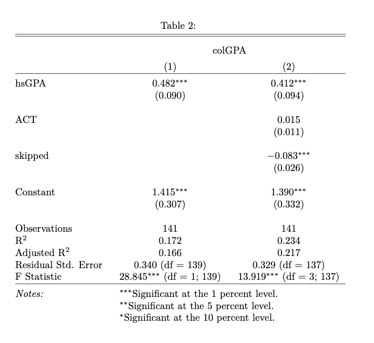

1 R-Applied Econometric Workflow
应用微观的经济学家的工作流会选择使用Stata（宏观学者可能会用Matlab,dynare,Julia）加上LaTeX/Lyx（包括做slides），若可能需要的话加上一些数据库的知识。
这里使用wooldridge包中大学GPA数据来作为演示。
1.1 Stargazer
1.1.1 描述性统计
选出我们所关心的几个变量进行描述性统计。
这里调用psych来进行描述性统计，但描述性统计的包并不仅限于此，甚至使用dplyr中的summarize也是一个比较好的选择。
| Statistic | N | Mean | St. Dev. | Min | Max |
| vars | 4 | 2.500 | 1.291 | 1 | 4 |
| n | 4 | 141.000 | 0.000 | 141 | 141 |
| mean | 4 | 7.923 | 10.871 | 1.076 | 24.156 |
| sd | 4 | 1.156 | 1.179 | 0.320 | 2.844 |
| se | 4 | 0.097 | 0.099 | 0.027 | 0.240 |
需要记得的是在option中添加results='asis'才会将输出代码以raw code的形式放在文本中。这里因为是html格式的缘故，因此将输出格式输出为html。若使用LaTeX输出格式，则最终在tex中所呈现的状态会是
##
## =========================================
## Statistic N Mean St. Dev. Min Max
## -----------------------------------------
## vars 4 2.500 1.291 1 4
## n 4 141.000 0.000 141 141
## mean 4 7.923 10.871 1.076 24.156
## sd 4 1.156 1.179 0.320 2.844
## se 4 0.097 0.099 0.027 0.240
## -----------------------------------------1.1.2 回归结果报告
先试图去回归一个基准组：
一个较为常用的快速查看回归结果的方法是使用summary()函数。
##
## Call:
## lm(formula = reg.base, data = gpa_var)
##
## Residuals:
## Min 1Q Median 3Q Max
## -0.85220 -0.26274 -0.04868 0.28902 0.88551
##
## Coefficients:
## Estimate Std. Error t value Pr(>|t|)
## (Intercept) 1.41543 0.30694 4.611 8.98e-06 ***
## hsGPA 0.48243 0.08983 5.371 3.21e-07 ***
## ---
## Signif. codes: 0 '***' 0.001 '**' 0.01 '*' 0.05 '.' 0.1 ' ' 1
##
## Residual standard error: 0.34 on 139 degrees of freedom
## Multiple R-squared: 0.1719, Adjusted R-squared: 0.1659
## F-statistic: 28.85 on 1 and 139 DF, p-value: 3.211e-07再添加一组控制组：
| Dependent variable: | ||
| colGPA | ||
| (1) | (2) | |
| hsGPA | 0.482*** | 0.412*** |
| (0.090) | (0.094) | |
| ACT | 0.015 | |
| (0.011) | ||
| skipped | -0.083*** | |
| (0.026) | ||
| Constant | 1.415*** | 1.390*** |
| (0.307) | (0.332) | |
| Observations | 141 | 141 |
| R2 | 0.172 | 0.234 |
| Adjusted R2 | 0.166 | 0.217 |
| Residual Std. Error | 0.340 (df = 139) | 0.329 (df = 137) |
| F Statistic | 28.845*** (df = 1; 139) | 13.919*** (df = 3; 137) |
| Note: | p<0.1; p<0.05; p<0.01 | |
当然，在回归结果报告还是在描述性统计中，最终的显示格式可以根据不同期刊来进行调整，比如来一个AER：
| colGPA | ||
| (1) | (2) | |
| hsGPA | 0.482*** | 0.412*** |
| (0.090) | (0.094) | |
| ACT | 0.015 | |
| (0.011) | ||
| skipped | -0.083*** | |
| (0.026) | ||
| Constant | 1.415*** | 1.390*** |
| (0.307) | (0.332) | |
| Observations | 141 | 141 |
| R2 | 0.172 | 0.234 |
| Adjusted R2 | 0.166 | 0.217 |
| Residual Std. Error | 0.340 (df = 139) | 0.329 (df = 137) |
| F Statistic | 28.845*** (df = 1; 139) | 13.919*** (df = 3; 137) |
| Notes: | ***Significant at the 1 percent level. | |
| **Significant at the 5 percent level. | ||
| *Significant at the 10 percent level. | ||
若是在latex中显示就会是这样的：

1.2 在RStudio中写作
当然要有一整套的workflow不仅仅是将原代码c-p到overleaf，还需要在Rstudio中一整套的工作流程。
在RStudio中进行输出，我们会考虑使用bookdown这个包来进行编辑之间的论文，bookdownplus中有较多关于国内高校的毕业论文bookdown模版，能够直接输入相关命令获取模版。
同时，从最初的Pandoc，再到quarto，typst在近些年得到兴起，其对于格式的多样性支持能够帮助我们获取。但这些新兴文本输入工具可能使用并非广泛，比较常用的方法仍然是选择LaTeX+R，基本上可以实现大部分的功能
##
## % Table created by stargazer v.5.2.3 by Marek Hlavac, Social Policy Institute. E-mail: marek.hlavac at gmail.com
## % Date and time: Tue, Jun 13, 2023 - 16:46:18
## \begin{table}[!htbp] \centering
## \caption{}
## \label{}
## \begin{tabular}{@{\extracolsep{5pt}}lccccc}
## \\[-1.8ex]\hline
## \hline \\[-1.8ex]
## Statistic & \multicolumn{1}{c}{N} & \multicolumn{1}{c}{Mean} & \multicolumn{1}{c}{St. Dev.} & \multicolumn{1}{c}{Min} & \multicolumn{1}{c}{Max} \\
## \hline \\[-1.8ex]
## vars & 4 & 2.500 & 1.291 & 1 & 4 \\
## n & 4 & 141.000 & 0.000 & 141 & 141 \\
## mean & 4 & 7.923 & 10.871 & 1.076 & 24.156 \\
## sd & 4 & 1.156 & 1.179 & 0.320 & 2.844 \\
## se & 4 & 0.097 & 0.099 & 0.027 & 0.240 \\
## \hline \\[-1.8ex]
## \end{tabular}
## \end{table}在LaTeX中使用下述语法即可直接在同一文件夹中导入回归表格。
\include{olsreg.tex}其好处在于随时可以对回归结果进行更新。